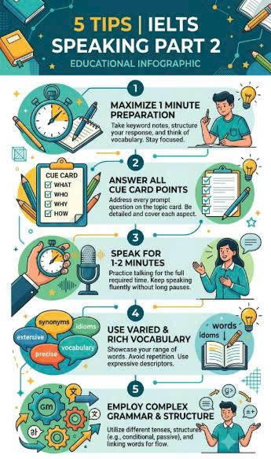
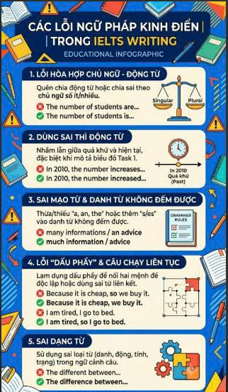
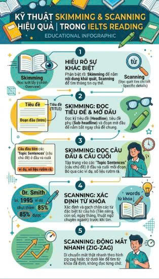

Speaking

5 Tips bứt phá IELTS Speaking Part 2
Hướng dẫn cách triển khai ý tưởng và sử dụng từ vựng ghi điểm trong phần thi nói Part 2 một cách trôi chảy nhất.
Đọc tiếp ➔
Hướng dẫn cách triển khai ý tưởng và sử dụng từ vựng ghi điểm trong phần thi nói Part 2 một cách trôi chảy nhất.
Đọc tiếp ➔
Tổng hợp những lỗi sai cấu trúc câu mà 80% thí sinh Việt Nam mắc phải khi viết Task 2 và cách khắc phục triệt để.
Đọc tiếp ➔
Bí quyết tiết kiệm thời gian đọc hiểu và tìm từ khóa cực nhanh để trị dạng bài True/False/Not Given hóc búa.
Đọc tiếp ➔